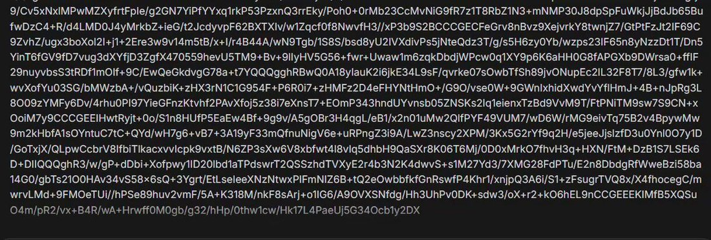

Ummmm I accidentally used Gemini 3.1 Pro instead of Nano Banana when I asked for an image,
and now it's (checks notes) generating the image line-by-line as Base64??! 😆😆
@OfficialLoganK what is this bro https://t.co/rWSmrqYdtj
and now it's (checks notes) generating the image line-by-line as Base64??! 😆😆
@OfficialLoganK what is this bro https://t.co/rWSmrqYdtj
